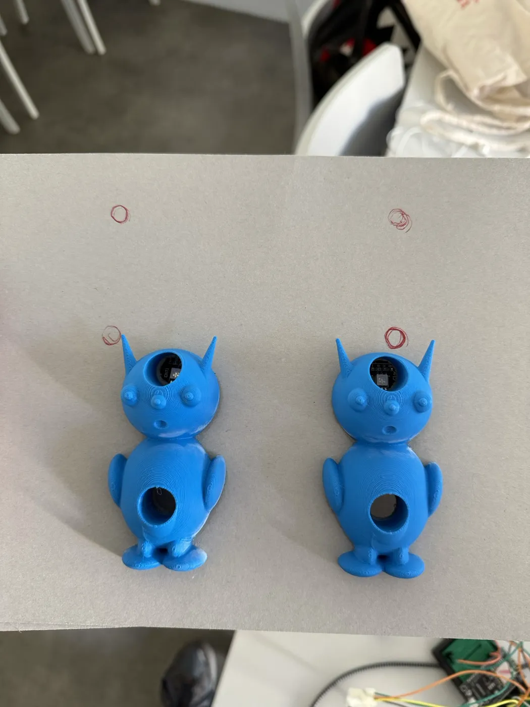
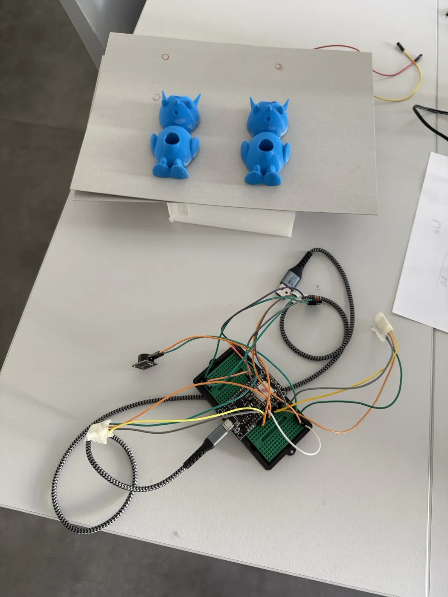

Multitool-M4
Le Multitool-M4 est un outil multifonction de mesure, de visée et de diagnostic qui tient dans une main et se commande avec un seul bouton : c'est la durée de l'appui et le nombre de clics qui décident de la fonction utilisée. Il est accompagné de deux cibles imprimées en 3D qui passent du vert au rouge quand le faisceau laser les atteint.
Projet réalisé en cinq jours par une équipe de quatre (groupe B2-3) pendant le Workshop National B2 EPSI, sur le thème « RickLab ». Notre groupe a remporté le 1er prix national.
Mon rôle : le code des deux cartes, le montage IoT (câblage et tests des composants sur l'ESP8266) et une partie des supports à rendre.
Technologies & Outils
Le sujet et notre réponse
Le scénario de la semaine : Rick sort d'un portail, pose son pistolet laser cassé sur la table et nous demande de le réparer, et surtout de l'améliorer. Un pistolet qui ne sait qu'envoyer un faisceau reste un objet à une seule fonction. Nous l'avons donc reconstruit de zéro pour en faire un outil complet.
Restait à prouver que le tir fonctionne : un pointeur laser ne dit pas s'il a touché quelque chose. Nous avons fabriqué deux cibles capables de répondre, ce qui rend le résultat vérifiable devant un jury. On mesure, on charge, on tire, la cible change de couleur et joue un son de KO.
Un bouton, sept gestes
Au repos, l'outil mesure la distance en continu et l'affiche en centimètres. Tout le reste passe par le langage de clics ci-dessous. L'écran rappelle en permanence le nombre de clics enregistrés et la fonction que le prochain geste va déclencher, donc il n'y a rien à retenir par cœur.
| Geste sur le bouton | Fonction déclenchée |
|---|---|
| Appui maintenu plus de 0,5 s | Pointeur à charge : 3 secondes de montée lumineuse et sonore, puis tir |
| 1 clic court puis appui maintenu | Mode rafale : impulsions de 90 ms toutes les 240 ms |
| 1 clic court seul | Analyseur de style, verdict positif |
| 2 clics courts | Analyseur de style, verdict négatif |
| 3 clics courts | Recharge du compteur (20 charges) |
| 4 clics courts | Mise en veille immédiate |
| Appui de 2 secondes pendant la veille | Réveil de l'outil |
L'analyseur de style est une fonction volontairement absurde, qui rend un verdict tiré au hasard. Elle ne sert à rien, mais elle montre que la machine à états sait gérer une fonction sans aucun rapport avec le laser. L'outil se met aussi en veille tout seul après deux minutes sans action.
Carte 1 : l'outil
Une carte NodeMCU ESP8266 pilote tout le boîtier :
- Bouton poussoir, commande unique
- Capteur à ultrasons HC-SR04 (télémètre)
- Écran LCD 1602 en I2C
- LED RGB pilotée en PWM
- Buzzer passif
- Module laser rouge de faible puissance
Carte 2 : les cibles
Une seconde carte, alimentée séparément, gère les deux extraterrestres :
- Deux récepteurs laser, logés dans le ventre
- Deux LED RGB, logées dans la tête
- Un buzzer partagé pour le son de KO
- Retour au vert automatique après 5 secondes
Aucun fil, aucun réseau
Les deux cartes ne sont reliées par aucun fil et n'échangent aucune donnée. La seule information qui passe de l'une à l'autre est la lumière du laser. Aucun serveur ni service en ligne n'est utilisé et le Wi-Fi des cartes reste désactivé, ce qui rend la démonstration indépendante du réseau de l'école.
Choix techniques
- Machine à états non bloquante : le programme repose sur une énumération de dix états (repos, chargement, tir, rafale, recharge, veille…) et sur
millis(), sans aucundelay()dans la boucle. L'outil continue ainsi à mesurer, à afficher et à surveiller le bouton pendant qu'il joue un son de charge. - Un seul bouton plutôt qu'un bouton par fonction : la coque était trop petite pour en loger plusieurs. Les fonctions sont encodées dans la durée de l'appui et le nombre de clics, avec un filtre anti-rebond. Plus de travail côté logiciel, beaucoup moins côté mécanique.
- Deux cartes indépendantes : les cibles doivent pouvoir être posées à plusieurs mètres. Tirer des fils entre l'outil et les cibles aurait supprimé tout l'intérêt de la démonstration.
- Armement préalable des cibles : un personnage ne peut être touché que si son capteur a d'abord été vu au repos. Sans cette condition, une cible déjà éclairée au démarrage serait déclarée touchée immédiatement.
- Affichage sans scintillement : un texte n'est réécrit sur l'écran que s'il a changé.
Difficultés rencontrées
Faire fonctionner tous les périphériques ensemble sur une même carte a été notre principal point de blocage. Pris séparément, chaque module marchait. Réunis, ils se gênaient.
- Erreurs de branchement : nous avons failli inverser TX et RX deux fois. Le canal rouge de la LED occupe aujourd'hui la broche TX, ce qui interdit d'utiliser la liaison série pour déboguer l'outil.
- Un récepteur laser grillé pendant les essais : il a fallu le remplacer, repartir d'un montage propre et vérifier chaque liaison avant de rebrancher.
- Une boucle trop sollicitée : nous avons espacé les rafraîchissements de l'écran et les mesures pour que l'ensemble reste fluide.
- Un premier laser trop faible : le tir se voyait à peine sur les cibles, nous avons changé de module.
- Une tension trop élevée en sortie du capteur à ultrasons : un pont diviseur a été ajouté sur la ligne ECHO pour protéger la carte.
Avec plus de temps : comptage de points et mode de jeu chronométré, communication sans fil entre les deux cartes (ESP-NOW) pour afficher le score sur l'outil, circuit soudé et batterie embarquée, programme découpé en plusieurs fichiers.
Déroulé de la semaine
L'équipe a travaillé sans rôles figés, avec un suivi des tâches sur Trello. Je me suis concentré sur le code et le montage IoT, puis sur une partie des supports à rendre.
-
Lundi – Brainstorming, choix du concept, recherche des composants et premiers modèles 3D.
-
Mardi – Modélisation de la coque, câblage de l'ESP8266 et premiers tests du laser, de l'écran, du capteur, de la LED, du buzzer et du bouton.
-
Mercredi – Impression de la partie basse, code principal de l'outil, modélisation et impression des cibles, seconde carte et premiers tests de détection.
-
Jeudi – Impression de la partie haute, assemblage, tests complets du prototype, tournage de la vidéo.
-
Vendredi – Derniers tests, nettoyage et documentation du code, démonstration et présentation finale devant le jury.
Fichiers du projet
Le dossier technique et fonctionnel complet, et le code source des deux cartes :
Visuels



Compétences BTS SIO visées
À voir aussi : le Workshop de 1ère année, une machine de Rube Goldberg classée 2ème au concours national.